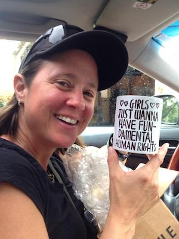

COMM_1004: First-Semester Experience COMM
Instructor: Susan Stinson
Awards and Honors:
Advisor of the Month, Virginia Tech, Octorber, 2017
Outreach and Service:
On a daily basis, Susan (Scout) gathers various cases and reports to bring to the Virginia Assembly on LGBT rights being oppressed by conservative legislature. Scout’s job is a significant part of her life, and part of her humanity.
On News Article:
Course Introduction:
This course is designed to give students the opportunity to receive assistance directly from their academic advisor on a weekly basis as students make the transition from their former college/university.
My opinion:
This class is helpful to me as a new transfer student. Scout has been a very nice instructor and advisor throughout the semester, and she has introduced many valuable recources of campus during her lectures.
Grade Expectation
A